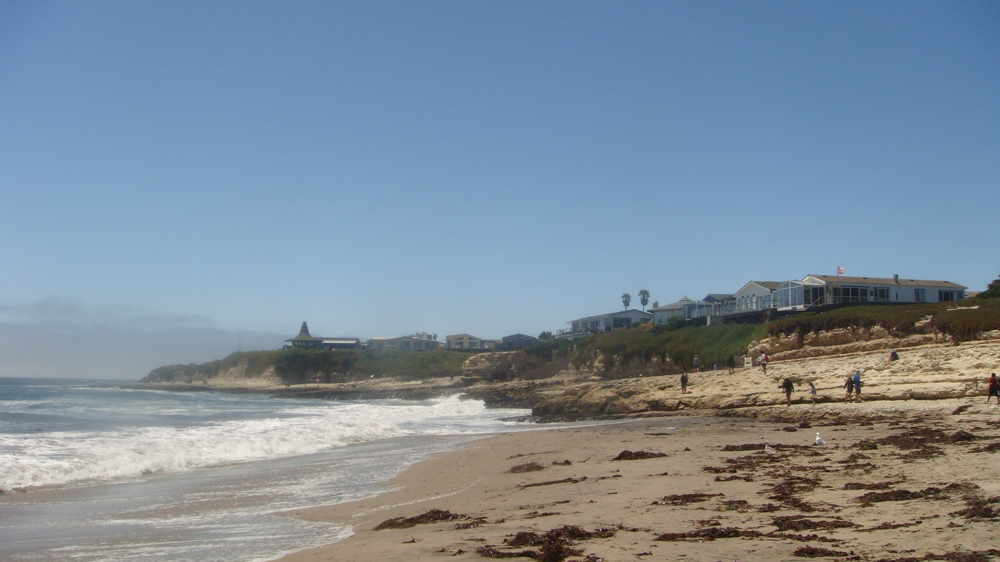
 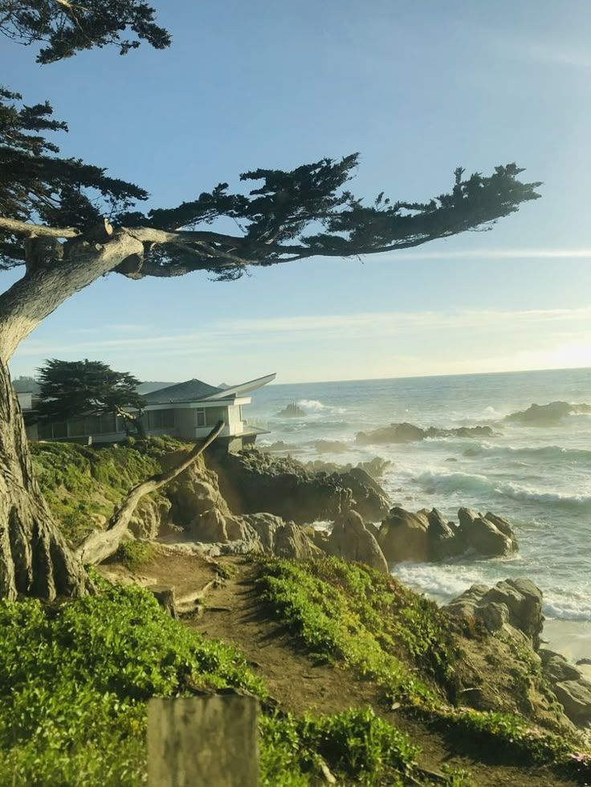
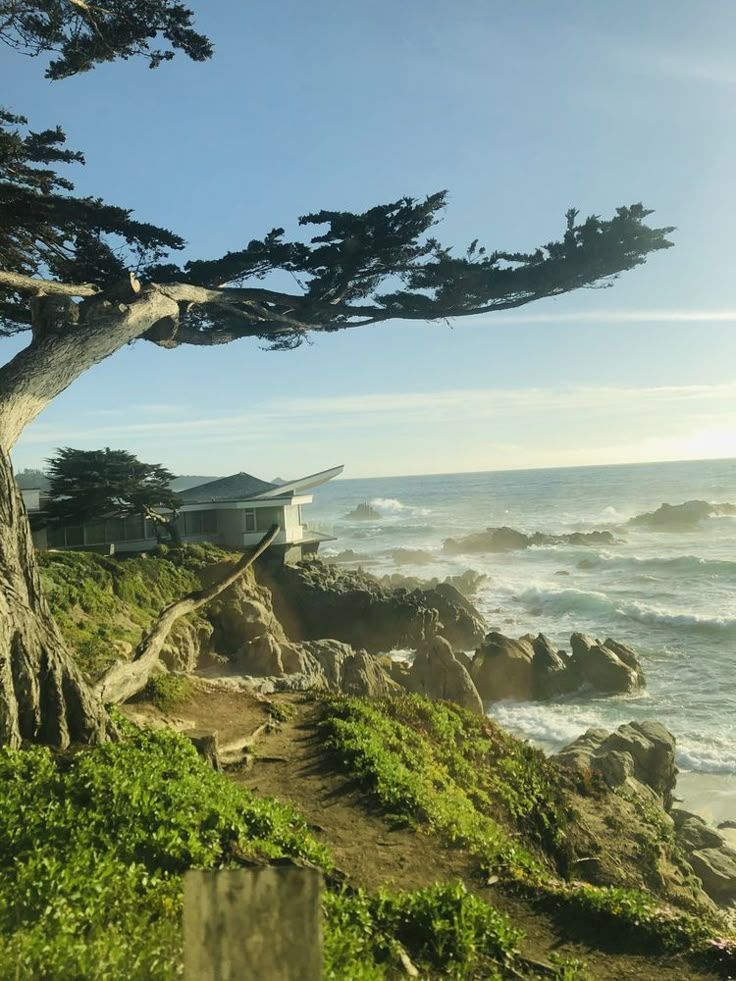
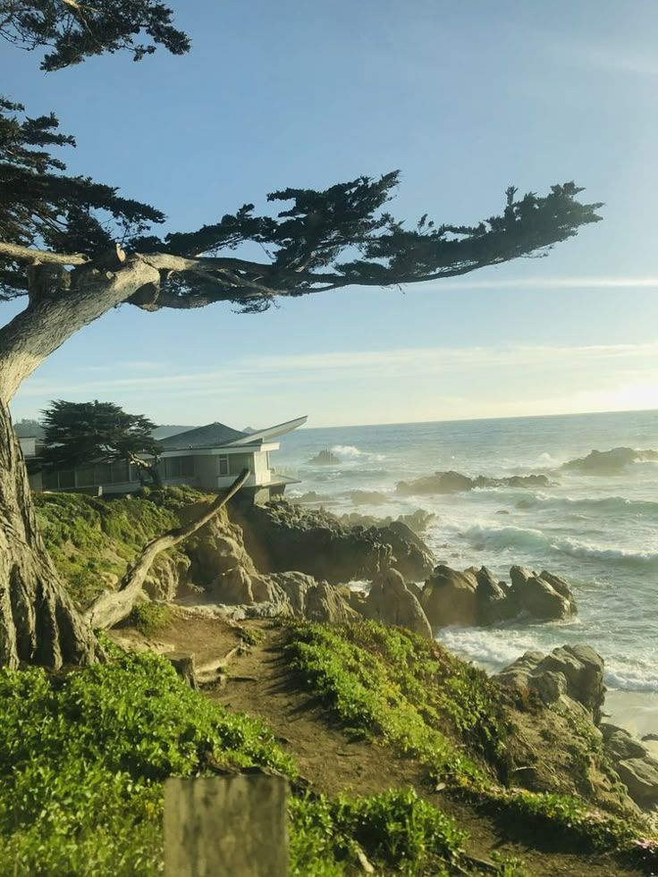

 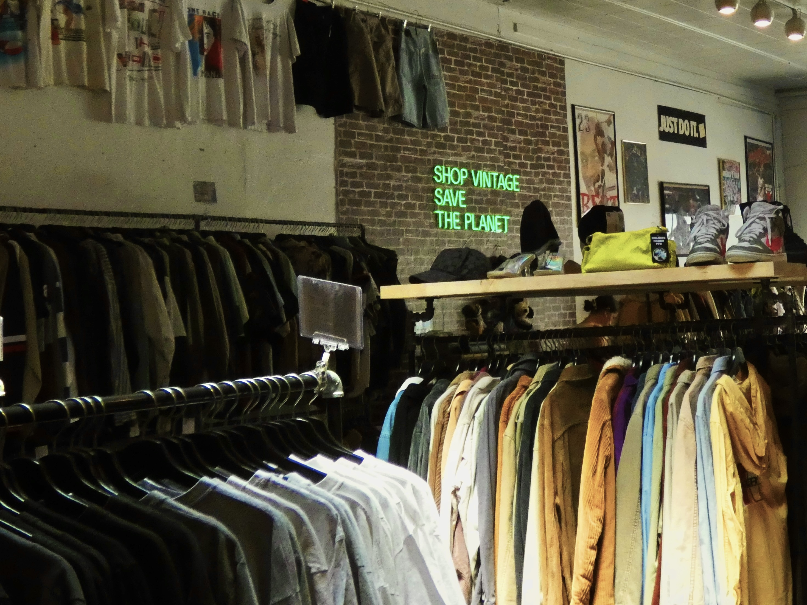
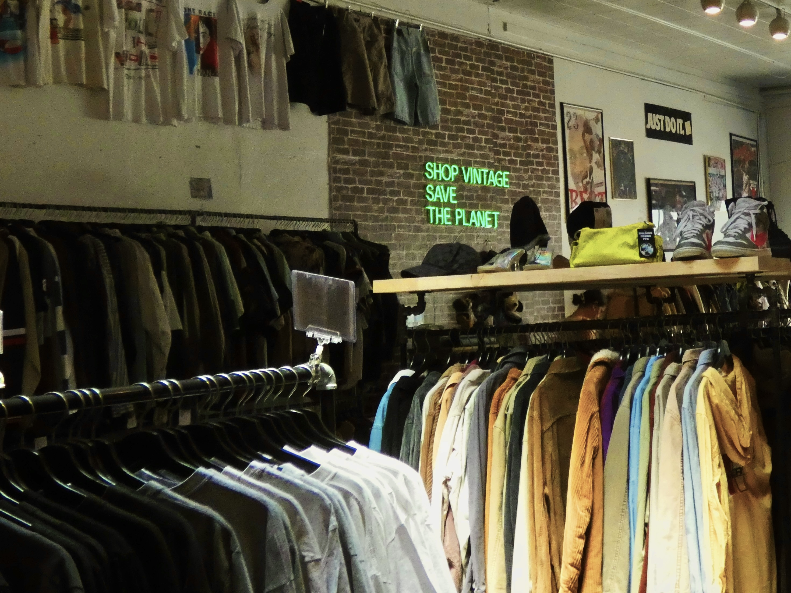
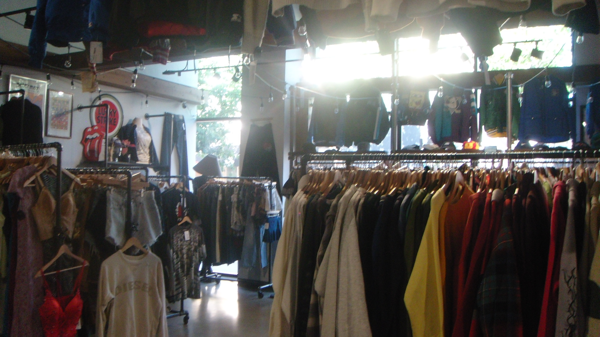
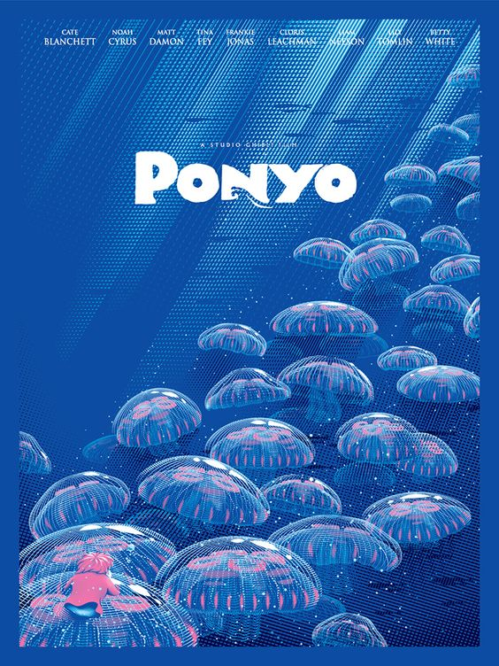
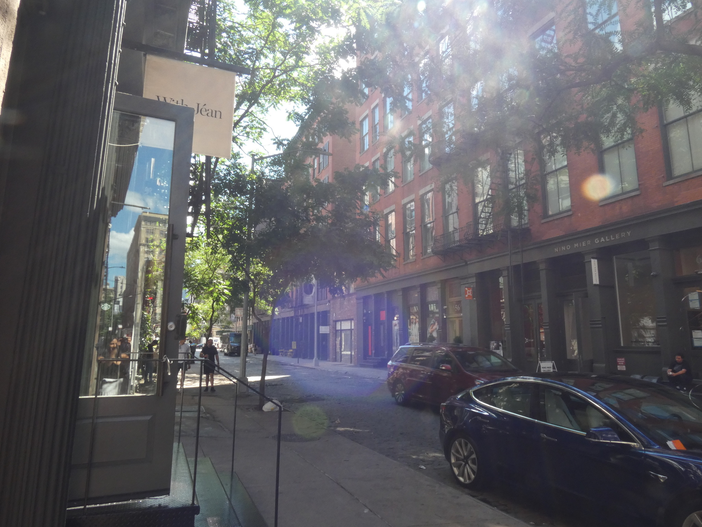
I'm a student at Purdue University studying Data Science. I enjoy using CS to help bring light to social issues and create user focused solutions. When I'm not coding, I love to sing, read, and watch kdramas. My favorite animal is a jellyfish and I love listening to all kinds of music. I
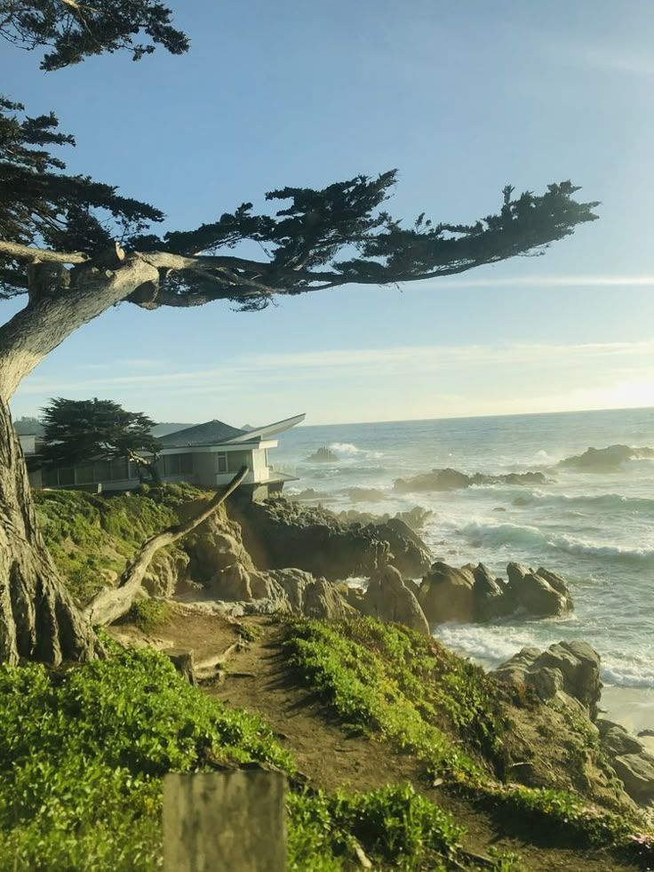
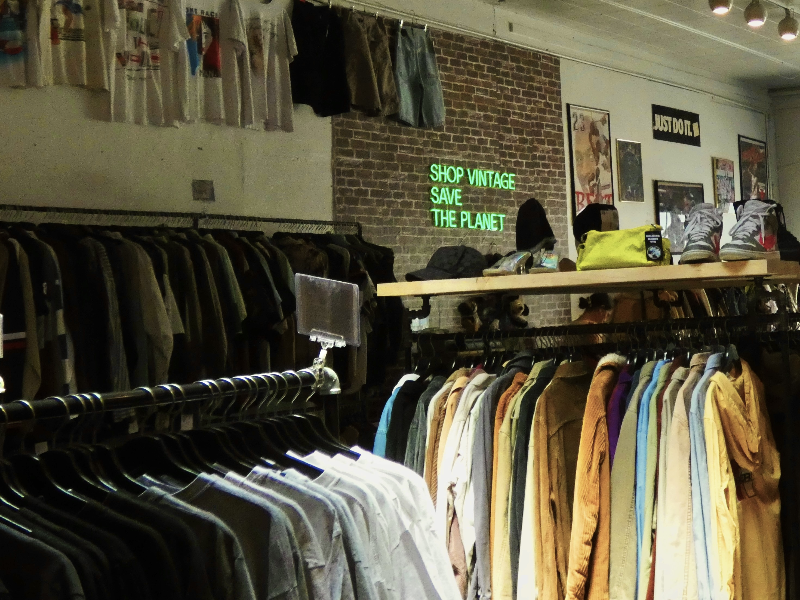
I started KWK in 2020 with the Web Development camp, and have since completed the Data Science and the Mobile App curriculums. I've been an IA for the Data Science camp as well as a couple CODE-A-BRATIONS. It's such a cool experience sharing the KWK magic with new scholars. Currently, I'm a Data Science major, and I hope to continue creating and learning throughout college and beyond.